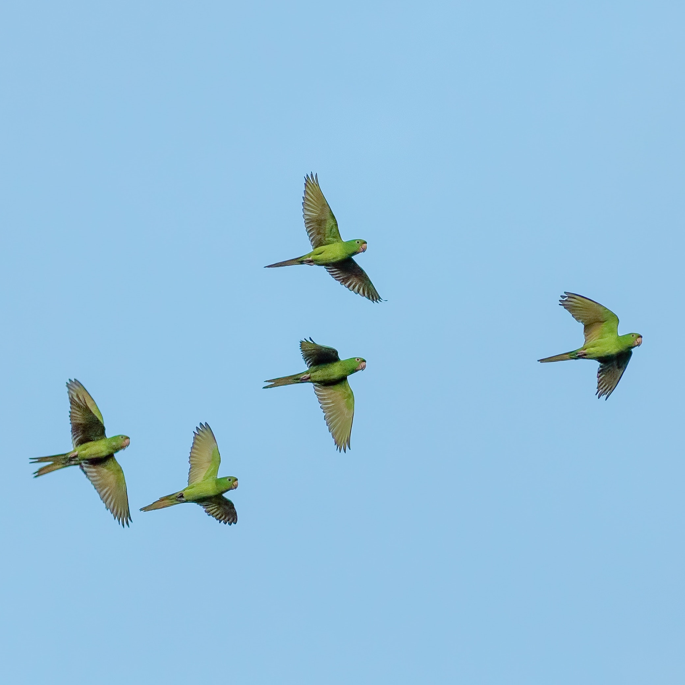
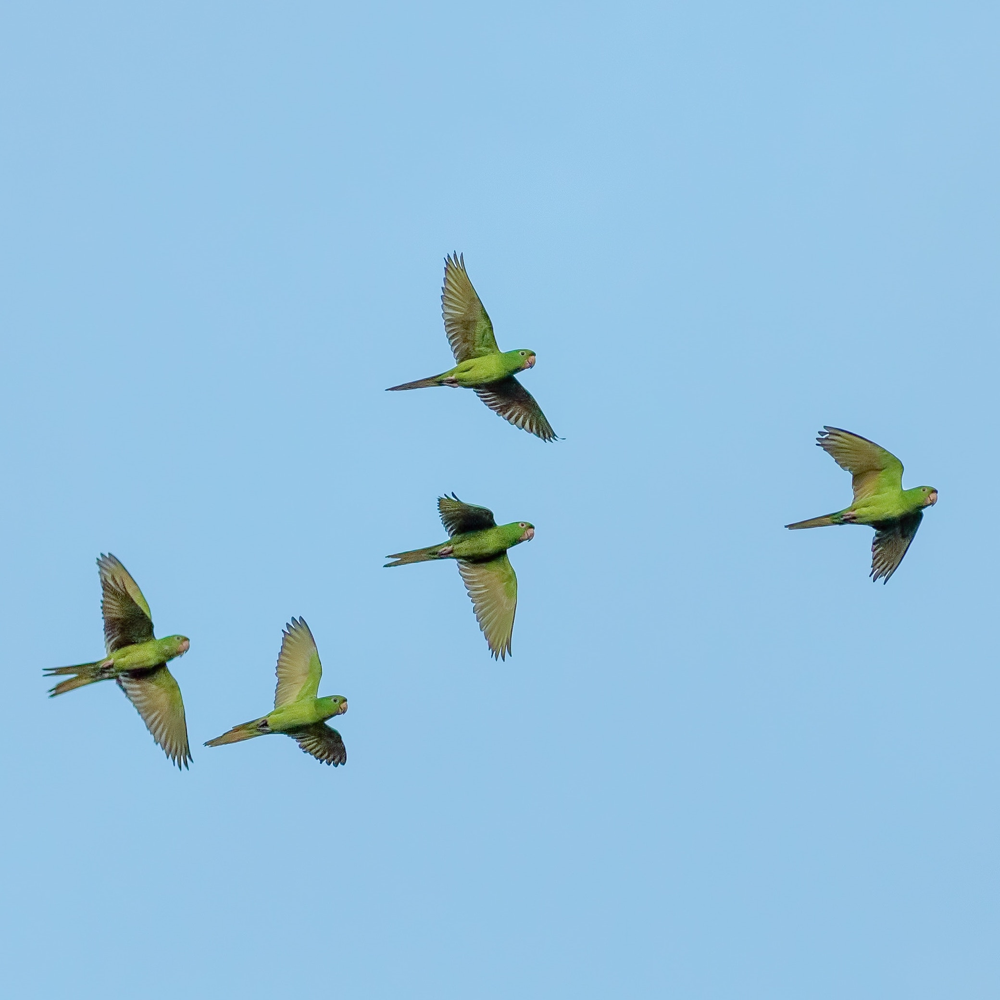

Angry?
Three Steps to Relieve Your Anger
Step 1: Digital Anger Room
Release your anger without actually breaking anything in this digital anger room. Click here to learn more about anger rooms.
You're pissed off. Angry. Furious. You want to blow off steam, maybe even break something. Expressing your anger can be a good thing.
“Repressed anger produces all sorts of problems,” says clinical psychologist Scott Bea, PsyD. “It can contribute to physiological symptoms, or psychological symptoms like anxiety. The way in which we manage anger is significant.”
Anger rooms have become a popular destination for people who needs a "safe space" to blow off some steam. The creation of anger rooms derived from the urge of breaking something when one is angry. Therefore, instead of destroying -- and repairing or replacing -- stuff at home, businesses mostly known as "Anger Rooms" or "Rage Rooms" is a place where, for a fee, you can wreak as much havoc as you want with no consequences. With prices ranging from $20 to $90, visitors are able to pick an instrument of their choice, such as a baseball bat, a crowbar or a sledgehammer, and may pick items to break or bring their own. Next, customers are able to blast music and start breaking.
Read More About Anger Rooms.
Step 2: Breathing Room
Relax and practice strategic breathing to calm your nerves. Click here to learn more about the 4-7-8 Breathing Technique.
Breathing techniques are designed to bring the body into a state of deep relaxation. Specific patterns that involve holding the breath for a period of time allow your body to replenish its oxygen. From the lungs outward, techniques like 4-7-8 can give your organs and tissues a much-needed oxygen boost.
The 4-7-8 breathing technique is a great way to relieve one's feeling of anger as it puts the practitioner in a relaxed state almost immediately. The 4-7-8 breathing technique is takes almost no time and requires no equipment.
Sit with your back straight and place the tip of your tongue against the ridge of tissue just behind your upper front teeth.
4-7-8 Instructions:
- Inhale through your nose for 4 seconds
- Hold your breath for 7 seconds
- Exhale through your mounth for 8 seconds
- Repeat 3 times
A recent study showed that controlling breathing by counting breaths influences neuronal oscillations (rhythmic or repetitive patterns of brain activity) throughout the brain, particularly in brain regions related to emotion. Participants were asked to count how many breaths they took over a two-minute period, which caused them to pay especially focused attention to their breathing. When they counted correctly, brain activity (monitored by EEG) in regions related to emotion, memory and awareness showed a more organized pattern versus what’s normally experienced during a resting state. The results are preliminary, but add to the argument that controlling breathing taps into something deeper.
Read More About Strategic Breathing.
0
Breathe In
Step 3: Music Room
Relieve your anger by listening to calming music. Click here to learn more about how music can get rid of your anger.
Music is a helpful tool when learning to manage strong emotions like anger. Dopamine is an important chemical in our body that transmits the feeling of reward and motivation in our brain. Listening to music is one of the easiest ways to get your dopamine flowing, which result to the feeling of calmness and relief.
Mindlab International, a research institute, conducted a study on behalf of a bath and shower gel company, with the goal of creating the most relaxing song ever. In collaboration with the musical group Marconi Union, they managed to do that. The song, called "Weightless," has a rhythm of 60 beats per minute, which results in breathing and heartbeat synchronizing and slowing, and also involves bass and "low whooshing sounds." When played to 40 women, Mindlab says, the song produces a 65 percent reduction in anxiety levels and a 35 percent reduction in physiological resting rates.
If you're angry or stressed, another recommendations by many scientists to calm yourself is by listerning to the sounds of nature. Nature sounds is a good way to enter a calmer space. Research from 2017 done by the University of Sussex reveals that when people are exposed to sounds from natural environments, the signals of stress and arousal in their bodies visibly reduce. Natural noises made people's brains look "outwards," listening and being aware of their environment.
Read More About the 10 Most Relaxing Songs in the World.


 

"Weightless" by Marconi Union is playing.
"Electra" by Airstream is playing.
Sound of ocean waves is playing.
Sound of rain is playing.
Sound of nature is playing.
Sound of birds is playing.